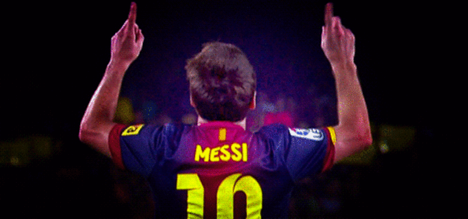

Lionel Messi

Considerado con frecuencia el mejor jugador del mundoy uno de los mejores de todos los tiempos
el único futbolista en la historia que ha ganado, entre otras distinciones, cinco veces el Balón de
Oro –un Balón de Oro y cuatro FIFA Balón de Oro– obteniendo los cuatro primeros de forma consecutiva;
además de recibir cuatro Botas de Oro. Con el Barcelona ha ganado 30 títulos, entre ellos, ocho de La
Liga y cuatro de la Liga de Campeones de la UEFA, así como cinco títulos de la Copa del Rey.
Goleador prolífico,32? ostenta, entre otros, los récords por más goles en una temporada y un año
calendario, máximo goleador de La Liga, la Supercopa de España, la Supercopa de Europa, el Mundial
de Clubes, y jugador no europeo con más goles en la Liga de Campeones de la UEFA; además de máximo
goleador del F.C. Barcelona y de la Selección Argentina. Es uno de los futbolistas con más asistencias,
desde que se tienen registros, en partidos oficiales.
Nacido y criado en la ciudad de Rosario, a los 13 años se radicó en España, donde el Barcelona accedió
a pagar el tratamiento de la enfermedad hormonal que le habían diagnosticado de niño.39? Después de una
rápida progresión a través de la Academia juvenil del Barcelona,40? hizo su debut oficial con el primer
equipo a los 17 años, en octubre de 2004.41? A pesar de ser propenso a lesiones en los inicios de su
carrera,42? se estableció como jugador fundamental para el club.43? En 2007, fue finalista del Balón de
Oro y del Jugador Mundial de la FIFA, logro que repitió en 2008. Su primera campaña ininterrumpida fue
la temporada 2008, durante la que con el Barcelona alcanzó el primer triplete del fútbol español.
A los 22 años, ganó su primer Balón de Oro y el premio al Jugador Mundial de la FIFA del año.